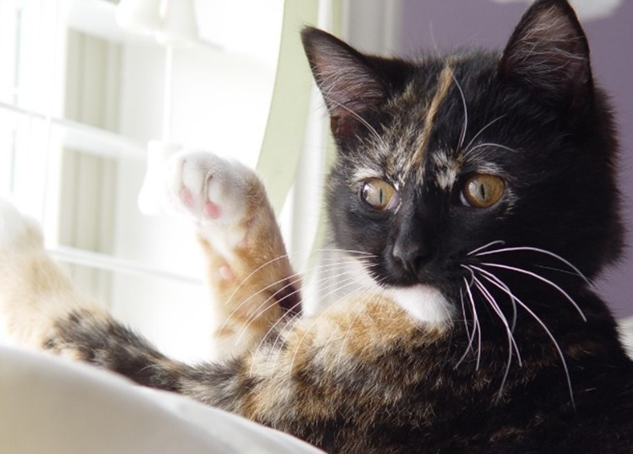
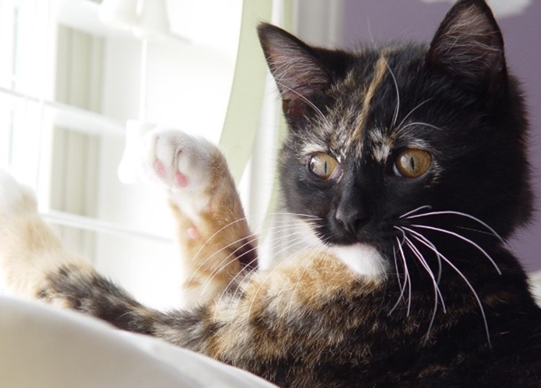

About:
Cats were first domesticated around 7500 BCE in the western Asia
region and are currently the second most popular domestic pet in the
United States. While there are over 60 unique documented cat breeds,
care and diet can differ between breeds. However, some diets and
practices are generally recommended for the well-being of your fluffy
family member regardless of breed.
Zero to Four Weeks:
It is important the queen (a term commonly used for a female cat that
is either pregnant or nursing) directly nurse her young if possible.
Monitor your kitten’s growth closely to make sure its growth rate is
progressing steadily. If any kitten is not growing at a sufficient
rate, a caretaker might need to feed the kitten directly either with a
bottle or a feeding tube. Some reasons why kittens might
might not gain weight appropriately include the following:
- Too many other siblings are competing for mom's milk
- Gastrointestinal disease
- Environmental conditions such as extreme heat or cold
- Unsanitary conditions
Four Weeks to One Year:
Kittens can start being introduced to soft wet kitten food typically
around three to four weeks after birth.
According to the
ASPCA
kittens at this age should eat either:
- Half to one cup of dry kitten food OR
- Six to nine ounces of wet kitten food per day.
One Year to Seven Years:
- This age is when kittens reach the cat stage and do not need as many nutrients.
- At this age, their level of activity decreases, and so does their metabolism.
- It is not recommended to leave food out for the cats all day.
Seven Years and More:
Much like many living organisms, the body begins to deteriorate and experience a lot of changes.
Cats at this age should eat:
- Less fat and calories
- More quality proteins.
 
